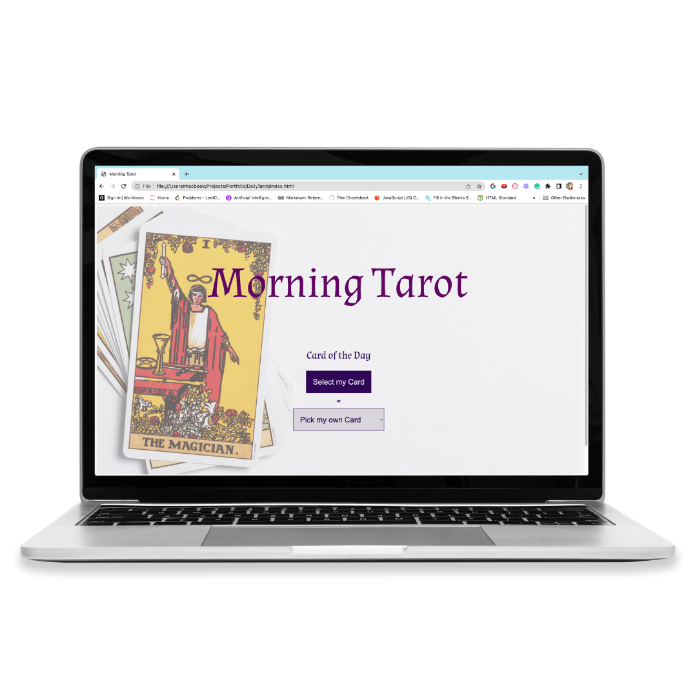
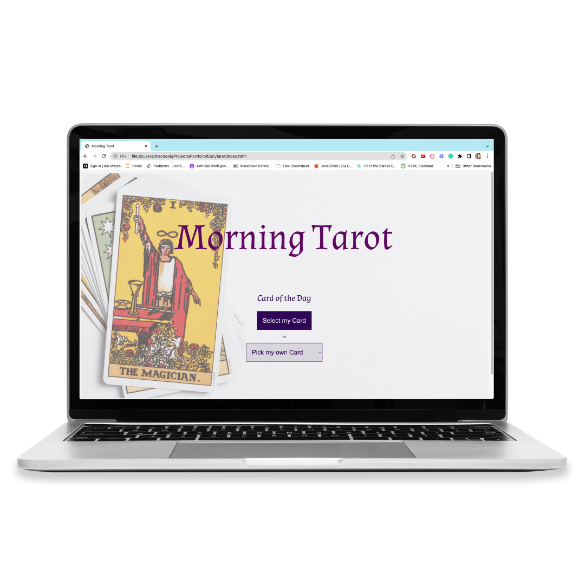

My Journey Building a Tarot Card Reading Application with ChatGPT
Introduction
I embarked on a journey to build a Tarot Card Reading site using the ChatGPT API, motivated by my fascination with how technology, particularly AI, can impact various fields, including spirituality. I wanted to create a tool that could provide different interpretations of tarot cards every time a card is returned on the screen, offering a unique reading each time.
Why I Built the Tarot Card Reading Application
I built this application because I was excited about how ChatGPT could understand and interpret the principles of spirituality. Writing out 78 different interpretations for tarot cards can be tedious, but even more it is a stagnant experince for users. Once they read the interpretation , there is no more knowledge to gain. I was thrilled about creating something that gave different answers every time that were still accurate and applicable. This project was an opportunity for me to explore the intersection of technology and spirituality, and to provide a tool for independent exploration of ideas, free from the influence of of other readers.
How the Application Works
The application offers users two options: they can select a card from the drop-down menu or let the site choose a random card via a function that uses Math.random from the cards object array. The chosen card is then passed through a fetch API which prompts ChatGPT to read the card and give a reading. This reading is then returned to the user, providing a unique interpretation each time.
My Approach to Building the Application
I built this application off of a very simple vanilla JS function. I originally used an if/else statement, then updated it to a switch. However, after updating the program to make it modular, I also wanted to simplify the code so I changed the switch to findIndex. This not only looks much cleaner, but is far easier to update. Previously when I wanted to adjust the information in the object array containing the cards names, I needed to update the object as well as the switch. Now I only need to update the object.
Challenges I Faced
Building something with an API was a new experience for me, and it was exciting to explore all the possibilities an API presents. Particularly with ChatGPT, writing the right prompt is key to getting the API to return what I want, and I had to try multople different versions of prompts before I got card interpretations that worked for the site.
I also learned a lot about protecting data and how essential an .env file is with APIs. Initially the api was available for anyone to read on github. Going back to hide it was a long process that also stretched my skills around creating new branches, merging branches, and cloning repos.
Another challenge I experienced was an issue with designing the CSS for the cards and the response without having to log a new card every time to see if the css worked. To solve this, I added a dummy description and card to the HTML, designed the layout, and then applied it to the CSS for the description and card return.
Future Improvements
The next level for this project is in creating a backend. I want to add a journal aspect to this site which will be connected to each user. Users can log in and save their thoughts and the daily readings. I also want to add a prompt to the site, so users can put in a certain situation they are looking for answers to and get responses related to a specific question.
Conclusion
Building the Tarot Card Reading application was a rewarding experience that taught me valuable lessons about APIs, data protection, and frontend development. The challenges I faced and the solutions I found have enriched my understanding of these technologies and have inspired me to continue exploring and learning.
 
